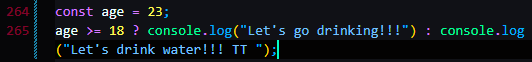

it's called Ternary Operator
if true, execute the first statement
faulse, execute the second statement
? : is an operator.
so it has value.


and we can use this in a template literal, unlike if/else statements


so we can have conditionals in statements.